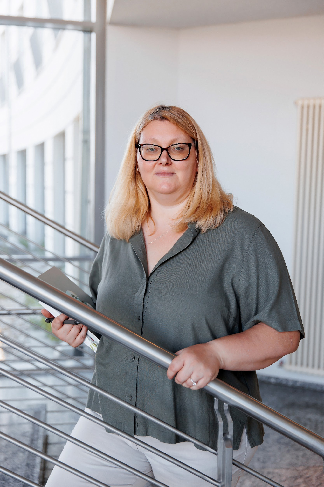
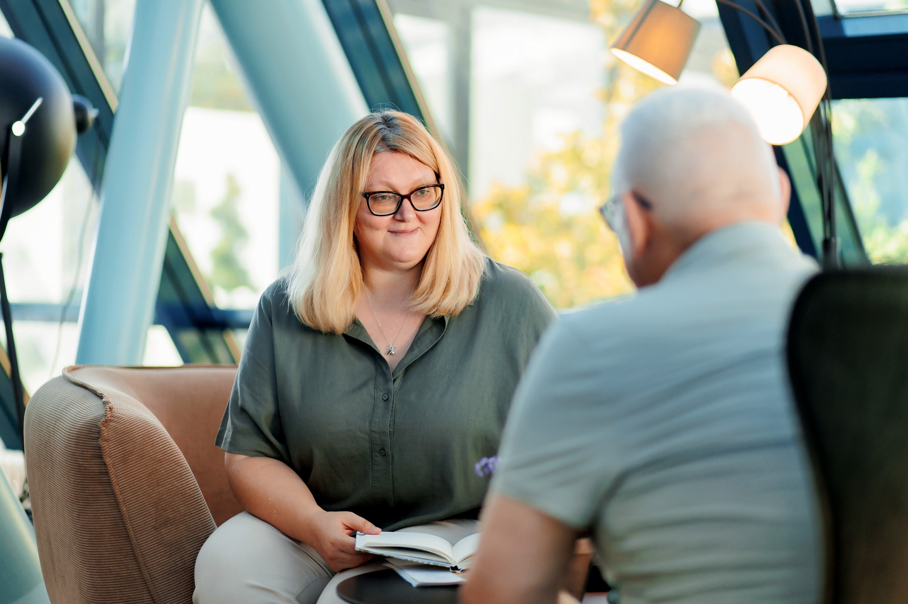

Персональный подход
Вашу ситуацию разбираю индивидуально и работаю с вами лично.
PRIVATE MEDICAL GUIDANCE
Персональное медицинское сопровождение в Германии — от профилактики и диагностики до лечения и координации комплексных медицинских задач.

ПОЧЕМУ СО МНОЙ
Вашу ситуацию разбираю индивидуально и работаю с вами лично.
Хорошо знаю, как устроена медицинская система Германии и как найти подходящий путь к нужным специалистам и клиникам.
Координирую согласованные этапы и беру на себя организационные и практические вопросы по ходу сопровождения.
Конфиденциальность и бережное отношение к личной и медицинской информации — обязательная часть моей работы.
ПОНЯТНЫЙ ПРОЦЕСС
Я помогаю собрать отдельные этапы в понятный процесс — от первого запроса до организации консультаций, обследований, лечения или профилактической программы.
Обсуждаем ваш запрос и имеющуюся медицинскую информацию.
Определяем следующие шаги и их последовательность.
Подбираю специалистов и клиники, организую консультации, обследования и коммуникацию.
Веду процесс, координирую и сопровождаю вас на каждом согласованном этапе.
КОГДА НУЖНА ПОМОЩЬ
Хотите заняться профилактикой, пройти check-up или подобрать индивидуальную программу обследований.
Не понимаете, с чего начать в медицинской ситуации.
Нужен подходящий специалист или клиника в Германии.
Хотите получить второе медицинское мнение.
Предстоит диагностика, лечение или реабилитация.
Необходимо организовать несколько консультаций, обследований или этапов лечения.
Медицинские вопросы касаются нескольких членов семьи.
Живёте за пределами Германии и хотите организовать медицинскую помощь здесь.
Не хотите самостоятельно заниматься поиском, организацией и коммуникацией.
WELLNESS & LONGEVITY
Индивидуальный подход к профилактике, восстановлению и долгосрочной заботе о здоровье.
Я помогаю подобрать и организовать программу с учётом возраста, образа жизни, медицинской истории и личных целей — от профилактической диагностики и оценки факторов риска до восстановления, healthy ageing и longevity.
Узнать большеОБЪЁМ СОПРОВОЖДЕНИЯ
Изучаю предоставленную медицинскую информацию и помогаю понять, что важно именно сейчас.
Определяю следующие шаги и их последовательность.
Подбираю врачей и медицинские центры с учётом вашей ситуации и задачи.
Организую консультации, обследования, работу с документами и коммуникацию с медицинскими учреждениями.
Помогаю организовать независимое второе медицинское мнение.
Веду процесс, координирую и сопровождаю вас на каждом согласованном этапе.
Медицинские решения принимают врачи совместно с пациентом. Я отвечаю за организацию, координацию и понятность процесса.
РЕЗУЛЬТАТ СОПРОВОЖДЕНИЯ
Вы понимаете ситуацию и следующие шаги.
У вас есть понятный маршрут вместо хаотичного поиска и несвязанных действий.
Вам не приходится каждый раз начинать сначала: я знаю контекст вашей ситуации и веду процесс дальше.
Большая часть организационной и операционной работы остаётся за кадром.
Вы понимаете, что происходит сейчас, что будет дальше и к кому обратиться с вопросом.
КАК СТРОИТСЯ РАБОТА
Обсуждаем вашу ситуацию, цели и ожидания.
Изучаю имеющуюся информацию и определяю основные вопросы.
Формирую индивидуальный маршрут и последовательность дальнейших шагов.
Подбираю специалистов и клиники, организую консультации и обследования.
Координирую и сопровождаю вас на каждом согласованном этапе.
УСЛУГИ

PRIVATE MEDICAL GUIDANCE
Индивидуальное ведение медицинской ситуации — от анализа и формирования маршрута до подбора специалистов и клиник, организации консультаций, обследований и координации дальнейших этапов.
Я сопровождаю вас и координирую процесс на протяжении всей нашей работы.
Обсудить ситуацию →FAMILY MEDICAL GUIDANCE
Координация медицинских вопросов нескольких членов семьи. Для каждого человека формируется собственный маршрут, при этом организационные вопросы ведутся через одного доверенного контактного человека.
Формат и объём сопровождения определяются индивидуально.
Обсудить формат →INITIAL MEDICAL GUIDANCE
Первая встреча, на которой мы разбираем ваш запрос, имеющуюся медицинскую информацию и следующие шаги.
Результат: понимание ситуации, приоритетов и подходящего направления дальнейшей работы.
Обсудить ситуацию →КАК ВЫГЛЯДИТ МОЯ РАБОТА
Я работаю с каждым запросом лично, внимательно отношусь к медицинской информации и веду согласованные этапы так, чтобы вам было понятно, что происходит сейчас и что будет дальше.

ОБО МНЕ
Меня зовут Наталья Генова. Я сопровождаю частных клиентов и семьи в медицинских вопросах в Германии — от профилактики и диагностики до лечения и реабилитации.
За годы работы я хорошо изучила немецкую медицинскую систему: как устроен путь пациента, чем отличаются университетские клиники и частные практики, как организуются консультации и обследования и как найти подходящего специалиста для конкретной ситуации.
Многие мои клиенты живут за пределами Германии, поэтому работа с международными запросами, медицинскими документами и дистанционная организация — привычная часть моей работы.
Моя задача — сделать медицинский процесс понятнее: спокойно разобраться в ситуации, определить следующие шаги и организовать их.
Всё, что вы мне доверяете, остаётся конфиденциальным.
ИЗ ПРАКТИКИ
Евгений
Евгений больше двадцати лет занимался триатлоном, но из-за проблем с ахилловыми сухожилиями всё чаще пропускал тренировки. Мы нашли в Германии специалиста, который понимал спортивные травмы и ценность возвращения к тренировкам. После обследования врачи предложили лечение, и сейчас Евгений снова тренируется и выступает на чемпионатах мира и Европы.
Анна
После серьёзной травмы Анне потребовалась сложная операция, которую нельзя было провести дома. Мы договорились с клиникой, подготовили поездку, а в Германии я была рядом с Анной в больнице, помогала на консультациях и организовала восстановительные процедуры. Домой она уехала с понятным планом реабилитации.
Ольга
Ольга приехала в Германию на обследование почек с диагнозом, который ей ставили около семи лет. Я была с ней на приёмах и переводила обсуждение с врачами. В конце обследования выяснилось, что диагноз не подтвердился, а особенность организма не должна мешать нормальной жизни.
Мария
Мария обратилась из Петербурга из-за болей в спине и шее, головных болей и головокружения. Мы выбрали комплексное обследование, которое помогло найти причину в области крестца. Лечение оказалось простым: остеопатия, упражнения, правильная нагрузка и ортопедическая поддержка. Уже через неделю боли прошли.
Семья Терехиных
После двойного перелома стопы и незаживающей кости семья обратилась за помощью в Германии. Впереди были консультации, две операции и восстановление. Мы всё время оставались на связи и проходили путь вместе. Постепенно муж перестал хромать и всё меньше вспоминал о своей ноге.
БЛОГ
ПРОФИЛАКТИКА
Профилактическое обследование имеет смысл тогда, когда программа соответствует конкретному человеку, его истории и задачам.
Читать →SECOND OPINION
Второе мнение помогает получить независимую оценку ситуации и дополнительную информацию перед важным медицинским решением.
Читать →ЛЕЧЕНИЕ
Немецкая медицина предлагает много возможностей, но путь к нужному специалисту не всегда очевиден.
Читать →КОНТАКТ
Опишите ваш запрос в удобной для вас форме. Я ознакомлюсь с ним, после чего мы обсудим возможный формат работы и следующие шаги.
Личная и медицинская информация обрабатывается конфиденциально и используется только для работы с вашим запросом.